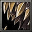

豐臣秀吉之姐，父親為木下彌右衛門，母親為大政 所。本名叫做智，後來出家，被稱為日秀尼。與身為農夫的彌介結婚，後來秀吉開始成為一派勢力，大力拉拔自己的親戚。1625年以九十二歲高齡過世，法名「瑞龍院日秀」，可以說是看盡豐臣家興起與沒落的人物。 智慧型遠戰英雄
法術 ：Ａ 輔助 ：Ａ 最擅長消耗敵軍戰力，策略退敵 敏捷：18+1.70 智慧：30+3.30（主要）  Ｄ[主動] 意志腐化 在10秒的時間之中，耗損指定目標600的法力點數 召喚一個可以偵測隱形的嗜血結界，每秒對範圍500的敵人造成[50/100/150/200]點傷害， 並且每秒恢復範圍500友方部隊1%生命點數。持續時間40秒。 耗魔[130/160/190/220]，等待時間40秒。 Ｅ[主動] 召喚‧珍珠圓盤 截斷在指定300區域的敵人的動作，並且召喚出一個生命[600/700/800/900]的珍珠圓盤來攻擊敵人。 圓盤每0.1秒就就會噴出一顆能造成[20/30/40/50]點傷害的珍珠來攻擊區域1000的隨機一個敵人。 可持續20秒。 耗魔[130/150/170/230]，等待時間21秒。 Ｒ[被動] 退化靈氣
降低1300範圍內敵方部隊[5/10/15/25]%攻擊力。  對著目標放出假情報，若是目標法力點數低於[1100]點，將會受騙以為本陣戰情告急而返回本陣，此時間內目標無法任何動作。 偽情報將在15秒後被識破。
耗魔[500]，等待時間[200/160]/120秒。 |